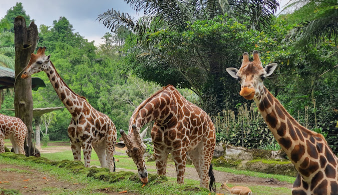

Jembatan Gantung Situ Gunung merupakan jembatan gantung terpanjang, yang berada di tengah hutan, di Asia Tenggara. Jembatan ini berlokasi di Taman Wisata Alam Situ Gunung, Sukabumi – Jawa Barat, yang telah menjadi salah satu tempat tujuan wisata selama bertahun-tahun dan merupakan bagian dari Taman Nasional Gunung Gede Pangrango.
Jembatan ini pertama kali dibangun di pertengahan tahun 2017. Proses pembangunan jembatan dilakukan secara manual dengan melibatkan warga lokal dan tenaga ahli dari Bandung. Meskipun tidak menggunakan alat berat, pembangunan jembatan ini selesai dalam kurun waktu kurang dari 1 tahun, lebih tepatnya selama 4 bulan. Harga tiket masuk kawasan sekitar Rp18.500, sementara tiket terusan (Jalur Hijau) untuk menikmati seluruh wahana dibanderol sekitar Rp100.000 per orang. [1, 2, 3, 4, 5]
Berikut adalah informasi lengkap untuk merencanakan liburan Anda ke sana:
📍 Lokasi & Akses
- Alamat: Taman Nasional Gunung Gede Pangrango, Desa Kadudampit, Kabupaten Sukabumi, Jawa Barat.
- Transportasi Umum: Jika Anda menggunakan kereta dari arah Bogor, Anda bisa turun di Stasiun Cisaat, lalu melanjutkan perjalanan dengan angkot atau ojek menuju pintu masuk kawasan. [1, 2, 3, 4]
🎟️ Pilihan Harga Tiket (Paket Terbaru)
Untuk menikmati berbagai fasilitas, pengelola menawarkan beberapa opsi paket terusan yang sudah termasuk welcome drink: [1]
- Jalur Merah: Sekitar Rp50.000 (Akses jalan kaki keliling, tidak melewati jembatan gantung utama).
- Jalur Kuning: Sekitar Rp75.000 (Akses Jembatan Gantung Utama dan Balcony Resto).
- Jalur Hijau (Direkomendasikan): Sekitar Rp100.000. Fasilitas meliputi:
- Akses Jembatan Gantung Utama (243 m) dan Jembatan Lembah Purba (535 m).
- Fasilitas antar-jemput menggunakan ojek.
- Akses ke Curug Sawer.
- Akses wahana Keranjang Sultan. [1, 2, 3, 4, 5]
🕒 Jam Operasional
Kawasan wisata ini beroperasi setiap hari dengan waktu sebagai berikut:
- Senin - Jumat: 07.00 - 16.00 WIB
- Sabtu - Minggu: 07.00 - 17.00 WIB [1, 2, 3]